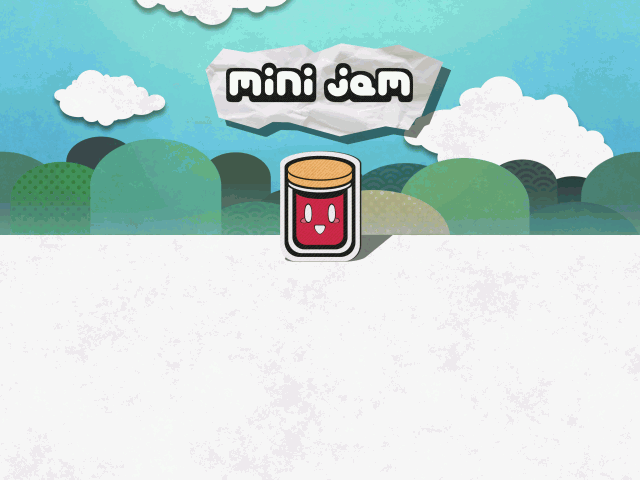
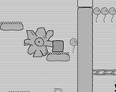
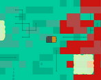
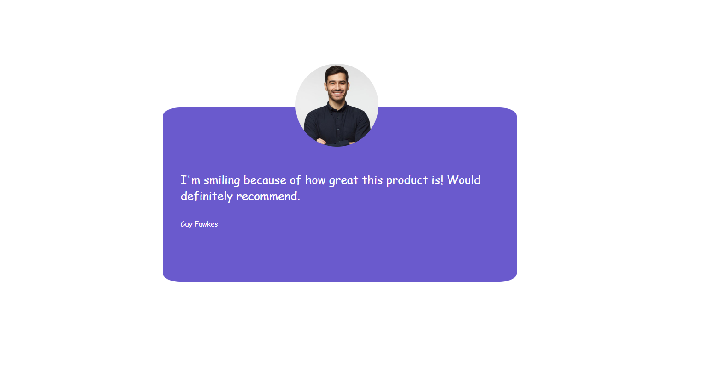
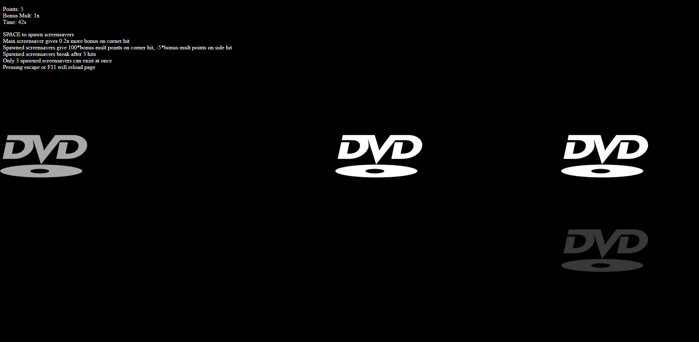
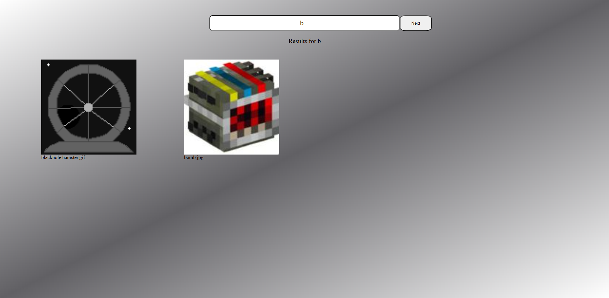
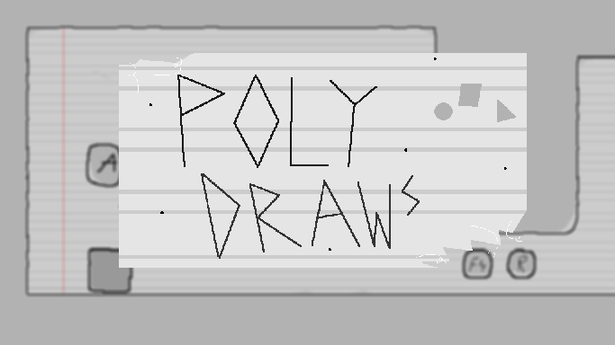
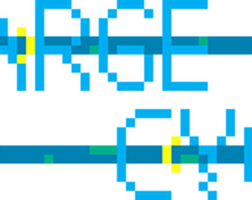
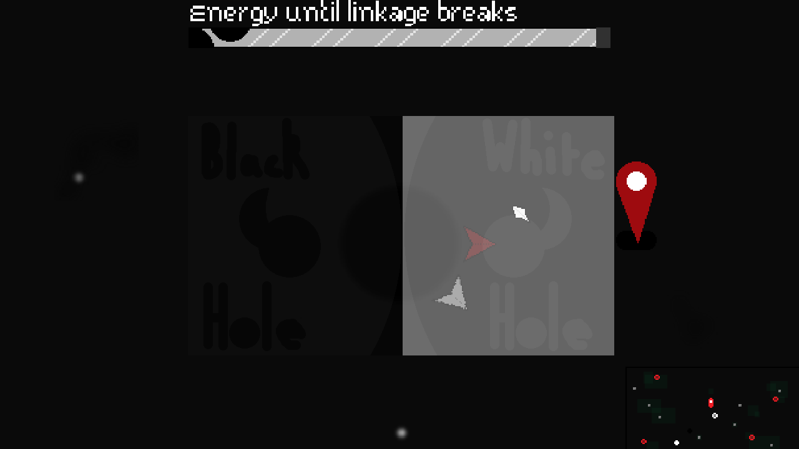

Quib Inc. is an organisation managed by Aaqib Choudhury in order to provide curated games, music and websites.
From OSTs to game jams, websites, hackathons and more!











⌄⌄⌄ Most recent newsletter ⌄⌄⌄